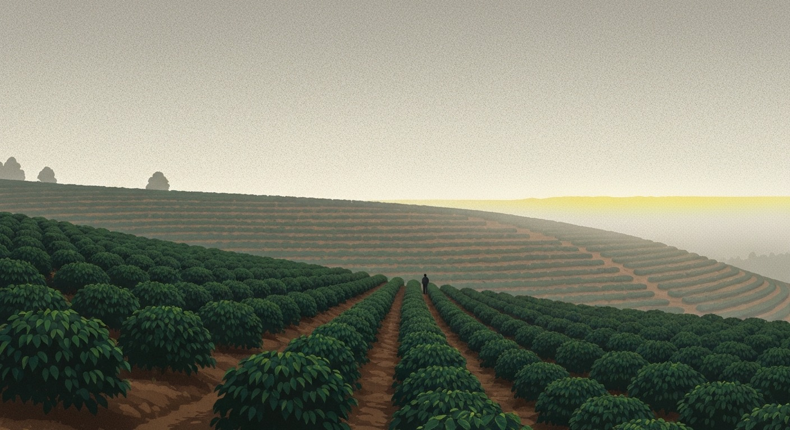

Our Story · Since 2019
We started Aster to slow one small part of the day back down.
Coffee had gotten loud. Faster, bigger, brighter, more. We wanted the opposite: one farm, one lot, one careful roast, and a cup you could sit inside of.
So we named it for a flower that opens late, when the light goes long and the day finally quiets down. That hour is the whole brief.

How we work
One roastery
Everything comes off a single drum roaster in the same room it is packed in. We roast Tuesdays and Fridays.
To your door
Nothing ships older than two days off the roaster. If it cannot be fresh, we do not send it.
Lots a season
We hold the guide short on purpose. Five farms we trust, rotated as each harvest comes in.
The long way here
“No haste in the cup.”
A borrowed drum
Two of us, one rented roaster, and a market stall on Sundays. Sold out by ten, most weeks.
The roastery on Larch Street
We took a corner unit, put the roaster in the window, and opened the counter three mornings a week.
Direct from the farm
We stopped buying through the middle and started visiting the lots. Every bag now names the row it grew in.
Still the still hour
Bigger roaster, same idea. Small lots, roasted to order, shipped the week they are ready.